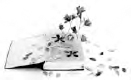

Books are rarely written in isolation. This one is no exception. Many of the ideas and much of the thinking came out of the thoughtful engagement of the teachers and researchers who participated in the research projects A Collaborative Self-study into the Development of Critical Literacy Practices (Sandretto et al., 2006) and A Collaborative Self-study into the Development and Integration of Critical Literacy Practices (Sandretto & Critical Literacy Research Team, 2008). These two projects took place over 3 years and were largely funded by the Teaching and Learning Research Initiative (TLRI), with support from a University of Otago Research Grant and a Humanities Research Grant.
The membership of the Critical Literacy Research Team (CLRT) varied over the course of the project. During the 3 years, two researchers, two research assistants and 17 teachers from five schools were members. Thank you to the CLRT members: Elsie Boyens, Gill Brown, Rosemary Coleman, Tony Graham, Lisa Hansen, Jo Harford, Peta Hill, Rae Howland, Wendy Lamond, Scott Klenner, Philip Maw, Rae Parker, Garth Powell, Tui Qauqau, Andrew Straw, Clive Swale, Peter Thorn, Jane Tilson, Jennie Upton and Jo Weggery. Many thanks to Dr Karen Nairn for her support as a research mentor on the project.
I would like to thank my co-researcher, Jane Tilson, for contributing to my thinking and for reading draft chapters. As always, it is a pleasure researching with you again.
Fiona Stuart also deserves special thanks for her careful proof-reading. The final draft has benefited greatly from your red pen.
Last, but certainly not least, I would like to acknowledge my co-author and husband, Scott Klenner. Scott and I wrote conference papers that formed the basis for two of the chapters in Planting Seeds. He also critically read and challenged my thinking on the remaining chapters. Thank you for your support.